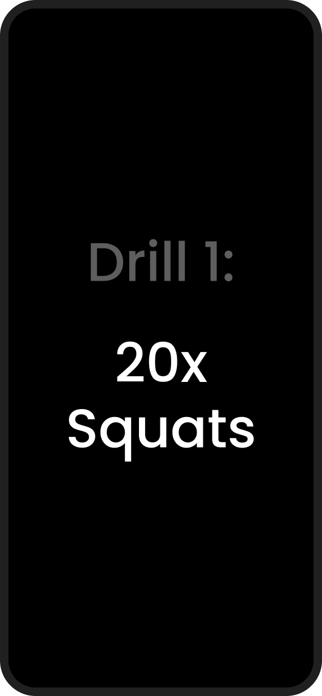

KhiladiPro / Sports & fitness olympiad
Designing for the
far side of the room.
A paid sports competition for 12–18-year-olds, played at home and scored by a phone camera.
Sole designer · Web, Android, iOS
~8 weeks · Team of four
I designed the landing page, registration, first-run setup and event experience. Every screen shipped as designed.
Registration is still liveThe client rehired me. I did not have analytics access to measure product impact.


Landing screen: design-stage export.
The brief
“Design the olympiad.”
The engagement was execution-focused: strategy and success metrics stayed with the client. My first job was to map that brief into four surfaces: the landing page, registration and payment, first-run onboarding, and the in-app event.
For the client, the olympiad was an acquisition play into casual sports participants adjacent to its core audience of young athletes.
Inherited app language
No formal design system; the new screens had to feel native.
Use type, scale and consistent state patterns within the existing visual language.
Fixed school-holiday window
25 May–15 June; marketing needed the pages beforehand.
Give the event dates prominence and make the registration deadline visible.
Three audiences, one URL
Students compete, parents pay and supervise, academies bring cohorts.
Sequence distinct promises on a single landing page.
Payment before installation
Registration and payment happen on the web.
Put reassurance beside the form, before the family downloads the app.
A team of four
One designer, a product manager, an engineer and the CEO.
Own the complete design across the website, onboarding and event screens.
01 / First-run setup
The far side of the room
If setup fails, the drill cannot be scored. In a paid event, that can become a refund request. I designed setup as a rehearsal: hold the phone, prop it up, step away, then move.
Nine screens, in shipped order

Introducing Supervision
A video introduces camera-based scoring before the app asks for access.

Camera permission
Explain what the camera tracks before the system permission request.

Face capture
The first drill asks the player to fit their face inside an oval.

Phone placement
A placement guide prepares the player to prop the phone and step away.

Body capture
The second drill asks the player to stand inside a full-body guide.

The verdict
A single, oversized “Perfect!” confirms the position from across the room.

The next drill
Six jumping jacks appear as the next instruction, without a trip through a menu.

Counting reps
The third drill combines a body guide, set progress and a large 3/6 counter.

The finish
The rehearsal ends with three completed drills and ten points earned.
When the test counts
From things to tap to things to read while moving.
When the phone leaves the hand, type size replaces tap size as the main concern. The scored test uses the same pattern: a drill instruction, a body guide and a prominent count.
Every setup step keeps “Skip for now”. It gives familiar users a way through, but also lets a new player bypass the preparation that makes a drill scoreable.

02 / Landing & registration
One page, three readers,
and the card.
The student, the parent paying and the academy coach arrive at one URL. Dates lead because the school-holiday window is fixed; the page then makes its promises in a deliberate order.

Explore the three-reader lens
Desktop 1440 / Mobile 390
What makes it above the fold?
Desktop 1440
- Olympiad headline
- 25 May–15 June
- For Khiladis
- For Parents
- Ages 12–18
- Register Now
The fold
Photograph alongside the offer.
Mobile 390
- Shorter olympiad headline
- 25 May–15 June
- Photograph
- For Khiladis
- Register Now
The fold
The parent’s line loses its place.
The full-width action stays prominent, but the parent’s benefit moves below the fold. Dates and the photograph have to carry more of the reassurance until they scroll.
From the page to the form
Reassurance at registration


- 1
Three steps, labelled
The sequence is visible before a parent starts typing.
- 2
Named people beside the fields
Quotes from Jonty Rhodes and academy coach Saurabh Dwivedi carry reassurance into the form.
- 3
Date of birth as a gate
Eligible birth years are selected in the form; the age rule is not left in an FAQ.
The step structure, fields and named quotes remain on the live registration page ↗. The desktop capture preserves the pale testimonial panel as it rendered that day.
View mobile capture · 390 px ↗
03 / Between attempts
Designing the waiting
An event app is mostly time between attempts. Each state needs to explain where the participant stands and offer a next step, inside the app’s inherited visual language.
Before committing to 24 minutes
The stage sheet puts the estimated time, the drills and peer completion together before starting a test. It makes the commitment visible before the test begins.


Unregistered
An event introduction and the access code sent by email.

Code error
An inline error keeps the code field available to retry.

Countdown
While the event is locked, the next action opens rewards.
Event home
Points earned, the next test and the event’s stages.

Points ledger
A drill-by-drill record of what counted.

Remaining tests
Unfinished tests and the points still available.
Outcome
Shipped as designed.
Everything I designed for KhiladiPro shipped: the web journey, onboarding and event screens. The registration page remains available in production.
After the olympiad, the growth team brought me back for an IPL fan-campaign landing page on desktop and mobile. The in-house team owned that campaign’s app screens.

The source material
Everything clickable
07 Figma prototypes
Aakash Verma / Product Head, Khiladipro
“Priyank is a talented designer with great skills. He showed intuitive product thinking. He is very proactive with his contributions and gives a lot of attention to detail. Working with him was a pleasure. I highly recommend him.”